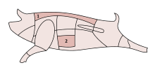

Bacon is defined as: cured meat from the sides and belly of a pig, having distinct strips of fat and typically served in thin slices.
According to Wikipedia: Bacon is a meat product prepared from pork and usually cured. It is first cured using large quantities of salt, either in a brine or in a dry packing; the result is fresh bacon (also known as green bacon). Fresh bacon may then be further dried for weeks or months in cold air, or it may be boiled or smoked. Fresh and dried bacon is typically cooked before eating, often by frying. Boiled bacon is ready to eat, as is some smoked bacon, but may be cooked further before eating.
Here are some of the parts of the pig that we typically get bacon from:
